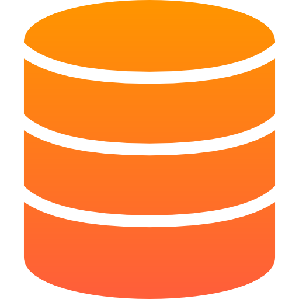

HTML – Grunden i min webbutveckling
Jag har lärt mig grunderna i HTML och använder det för att bygga strukturerade och semantiska
webbsidor.
Under min utbildning i webbutveckling har jag arbetat mycket med HTML5 och förstått vikten av att
skriva ren och semantisk kod. Jag använder HTML för att skapa en tydlig struktur på mina webbplatser
och säkerställa att de är tillgängliga och användarvänliga.
CSS – Styla och designa moderna webbsidor
Jag använder CSS för att göra mina webbsidor stilrena, responsiva och användarvänliga.
CSS är en av de viktigaste teknikerna jag använder för att styra layout, färger, typsnitt och
responsivitet på mina webbplatser. Jag har arbetat mycket med CSS3 och använder moderna metoder för
att skapa flexibla och snygga designlösningar.

JavaScript – Dynamik och interaktivitet på webben
Jag använder JavaScript för att skapa dynamiska och interaktiva webbsidor.
JavaScript är ett av de mest kraftfulla verktygen jag använder för att lägga till funktionalitet på
mina webbplatser. Med JavaScript kan jag manipulera HTML och CSS i realtid, hantera
användarinteraktioner och bygga avancerade webblösningar.
Java – Robust och objektorienterad utveckling
Java är ett av de mest använda programmeringsspråken för stora, skalbara och prestandakrävande
system.
Jag använder Java för att bygga kraftfulla och hållbara applikationer. Med sin objektorienterade
struktur och omfattande standardbibliotek, är Java ett utmärkt val för både webb- och
mobilutveckling, samt för att bygga serverbaserade system och backendlösningar.

SQL och NoSQL – Flexibilitet och Effektivitet i Databashantering
Databaser spelar en avgörande roll i alla system som hanterar och lagrar data. Beroende på
applikationens behov väljer jag mellan relationsdatabaser (SQL) och icke-relationsdatabaser (NoSQL).
Jag har erfarenhet av att arbeta med både SQL och NoSQL databaser och har god förståelse för deras
fördelar och användningsområden.